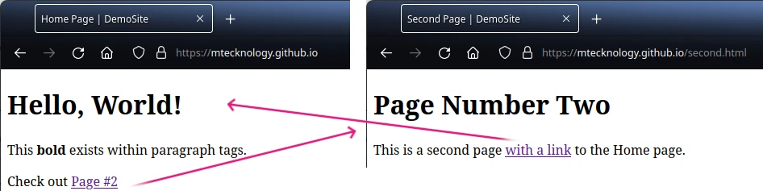

Very Basic Site¶
Although the index.html file from your git repository
is not valid HTML, browsers will render basic text as a text file. This means
that our existing git repo is already has everything needed to build a
website.
GitHub Pages¶
To enabled GitHub Pages on this git repo:
Navigate to your git project on GitHub
Click Settings (in the top menu)
Click Pages (in the side menu)
Sourceshould already be set toDeploy from a branchChange
Branchtomain/masterClick
SavePeriodically refresh the page, until
Your site is liveshows up:
{kind=link}
Click
View siteto see how a web browser will render yourindex.html:
Improving the Page¶
The page above is rendered from an index.html file that has only three lines
of text. We now want to replace this content with a proper HTML page.
Replace the content of index.html with the following:
<!DOCTYPE html>
<html>
<head>
<title>Home Page | DemoSite</title>
</head>
<body>
<h1>Hello, World!</h1>
<p>This <b>bold</b> exists within paragraph tags.</p>
</body>
</html>
Now create a high quality commit message and then push origin. After a
few moments, your website will now be updated with these changes.
Second Page¶
With a valid index.html HTML webpage, we can now create a
second file, named second.html:
<!DOCTYPE html>
<html>
<head>
<title>Second Page | DemoSite</title>
</head>
<body>
<h1>Page Number Two</h1>
<p>This is a second page <a href="/">with a link</a> to the Home page.</p>
</body>
</html>
Add another set of paragraph tags to index.html with the following:
<p>Check out <a href="/second.html">Page #2</a></p>
GitHub Desktop should show the following diff:
Push these changes to GitHub and wait for your website to be updated.
Your website will now have two web pages with links back and forth!
{kind=link}
Chapter Recap¶
At this point, you have now created a Static Website and put it onto the
internet using a subdomain of github.io
(<subdomain>.github.io). A second page was added and then both linked to
one another. You can even browse through each of these historical changes.
The complexity of maintaining these links grows exponentially as websites grow. Fortunately, tools exist to make this easier.